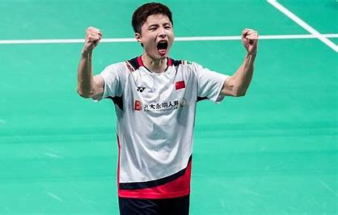
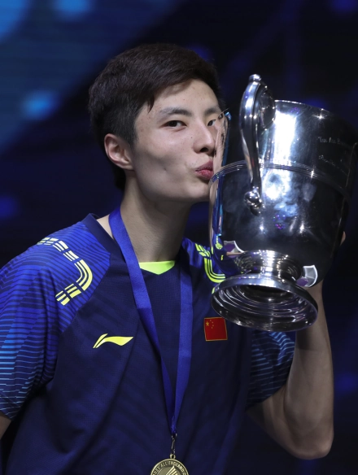
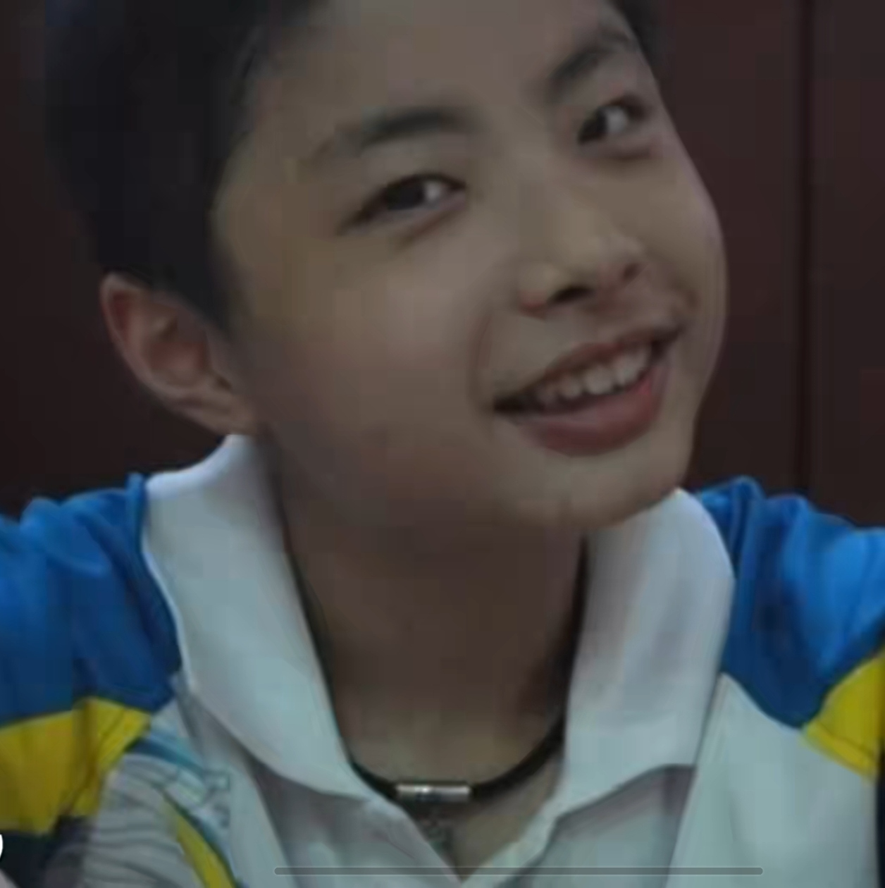
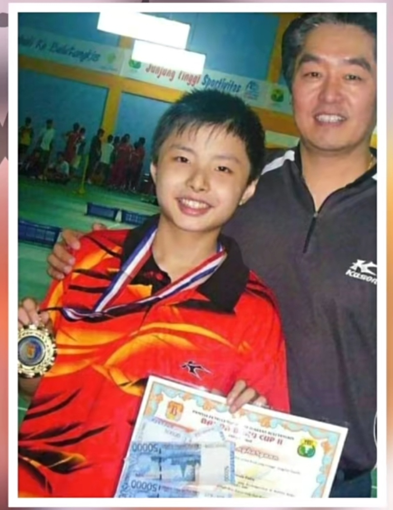
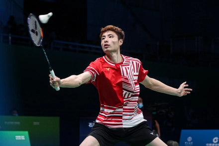
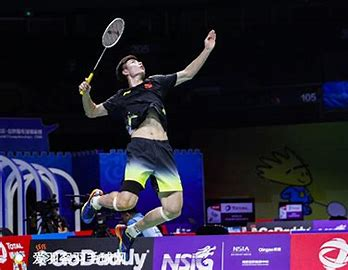
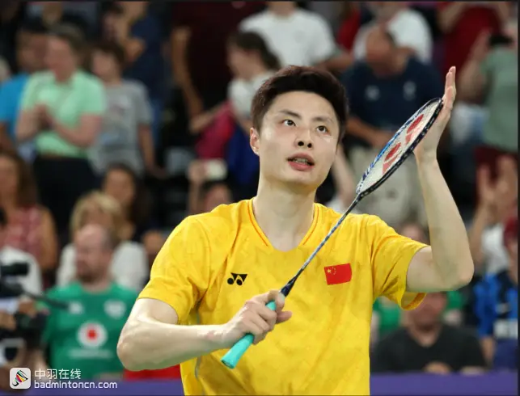

石宇奇：未完待续
目录
- （一）前言
- （二）人物简介
- （三）赛场成绩
- （四）早年经历
- （五）职业生涯
- （六）打法风格
- （七）人物评价
- （八）人物争议
- （九）后记
（一）前言
少年成名，见证过国羽最辉煌的时代，之后却饱受伤病和流言蜚语，当男单出现断层，
同批的天之骄子一个个倒于伤病，突然发现那个曾经的年轻张扬的小石头已经接过男单大旗，
苏杯场上意气风发的样子恍惚把人带回19年，张开双臂接受欢呼。希望石头继续陪球迷们走下去，希望国羽长虹

（二）人物简介
石宇奇（Shi Yu Qi），男，1996年2月28日出生于江苏南通，中国羽毛球男子单打项目运动员、世界冠军。
2024年6月11日，世界羽联11日公布2024年第24周的世界排名，中国队的石宇奇位列男子单打世界第一，国羽男单时隔8年重返榜首。
石宇奇 Shi Yu Qi - 中羽在线
(badmintoncn.com)
（三）赛场成绩
- 2024年印尼羽毛球公开赛男单冠军
- 2024年新加坡羽毛球公开赛男单冠军
- 2024年汤姆斯杯&尤伯杯团体锦标赛冠军
- 2024年法国羽毛球公开赛男单冠军
- 2024年印度羽毛球公开赛男单冠军
- 2024年马来西亚羽毛球公开赛男单亚军
- 2023年世界羽联总决赛男单亚军
- 2023年日本熊本羽毛球大师赛男单亚军
- 2023年丹麦羽毛球公开赛男单四强
- 2022年亚洲运动会羽毛球赛男单银牌
- 2022年亚洲运动会羽毛球赛男子团体金牌
- 2023年中国羽毛球公开赛男单四强
- 2023年韩国羽毛球公开赛男单四强
- 2023年苏迪曼杯羽毛球混合团体锦标赛冠军
- 2023年全英羽毛球公开赛男单亚军
- 2023年泰国羽毛球大师赛男单四强
- 2023年印尼羽毛球大师赛男单四强
- 2022年澳大利亚羽毛球公开赛男单冠军
- 2022年丹麦羽毛球公开赛男单冠军
- 2022年日本羽毛球公开赛男单四强
- 2021年苏迪曼杯混合团体羽毛球赛冠军
- 2021年第14届全运会羽毛球男单冠军
- 2021年第14届全国运动会羽毛球男团铜牌
- 2020年汤姆斯杯男子羽毛球团体锦标赛亚军
- 2020年泰国羽毛球大师赛男单四强
- 2019年澳门羽毛球公开赛亚军
- 2019年亚洲羽毛球锦标赛男单亚军
- 2019年苏迪曼杯羽毛球团体冠军
- 2019年马来西亚羽毛球公开赛男单四强
- 2019年瑞士羽毛球公开赛男单冠军
- 2019年全英羽毛球公开赛男单四强
- 2018年世界羽联世界巡回赛总决赛男单冠军
- 2018年中国福州羽毛球公开赛男单四强
- 2018年法国羽毛球公开赛男单亚军
- 2018年中国羽毛球公开赛男单四强
- 2018年亚洲运动会羽毛球赛男子团体金牌
- 2018年世界羽毛球锦标赛男单亚军
- 2018年印尼羽毛球公开赛男单四强
- 2018年汤姆斯杯男子团体金牌
- 2018年全英羽毛球公开赛男单冠军
- 2018年德国羽毛球公开赛男单四强
- 2018年亚洲羽毛球锦标赛男子团体银牌
- 2018年印度羽毛球公开赛男单冠军
- 2017年全运会羽毛球男单亚军
- 2017年世界羽联超级系列赛总决赛男单四强
- 2017年中国香港羽毛球超级赛男单四强
- 2017年日本羽毛球超级赛男单四强
- 2017年澳大利亚羽毛球超级赛男单四强
- 2017年苏迪曼杯混合团体亚军
- 2017年亚洲羽毛球锦标赛男单四强
- 2017年瑞士羽毛球黄金大奖赛男单亚军
- 2017年全英羽毛球超级赛男单亚军
- 2017年亚洲羽毛球锦标赛混合团体季军
- 2016年碧特博格羽毛球黄金大奖赛男单冠军
- 2016年法国羽毛球超级赛男单冠军
- 2016年印尼羽毛球大师赛男单冠军
- 2016年印度羽毛球黄金大奖赛男单四强
- 2015年全国青年运动会羽毛球赛男单亚军
- 2014年青年奥林匹克运动会羽毛球赛男单冠军
- 2014年世界青年羽毛球锦标赛男单亚军
- 2014年世界青年羽毛球锦标赛混合团体冠军
- 2014年亚洲青年羽毛球锦标赛男单冠军
- 2014年亚洲青年羽毛球锦标赛混合团体冠军
- 2013年世界青年羽毛球锦标赛混合团体季军
- 2013年亚洲青年运动会羽毛球赛混合双打铜牌
- 2013年亚洲青年运动会羽毛球赛男单铜牌
- 2013年亚洲青年羽毛球锦标赛混合团体冠军

（四）早年经历
1996年2月28日，石宇奇出生在江苏省南通市一个普通的家庭。虽然他小时候的运动天赋不是很好，
但他的父亲是一位经验丰富的运动爱好者，年轻时曾打过乒乓球和足球。当石宇奇开始学骑自行车时，
父亲发现他运动能力弱，就带他到南通市体校练习。

当时，石宇奇的父亲喜欢足球，想让他学踢球，但因为球场上积水过多，他们最终选择了羽毛球。
石宇奇当时虽然对羽毛球运动了解不深，但很快就对这项运动产生了兴趣。
他性格内向，不善于与陌生人交流，这让他可以专注于训练而不受其他孩子的影响。
在南通体校期间，石宇奇只有一次没有完成一次训练任务。那天，父亲匆匆离开球馆，
石宇奇在热身时发现父亲不见了，就把他赶了出去。这是他童年“克服”的事情之一。
石宇奇虽然没有突出的运动天赋，但父亲的支持和鼓励
，以及他自身的努力和对羽毛球的浓厚兴趣，最终让他成为了一名出色的羽毛球运动员。
那时，石宇奇在练习羽毛球时，完全不知道比赛的概念。他的父亲总是鼓励他进步，
并带他到南通体校学习羽毛球。13岁在同龄比赛中获得第一名，被南京市体校录取。
然而，他的叔叔希望他专心学习而不是运动。虽然压力山大，但石宇奇还是坚定地选择了羽毛球，
因为他非常喜欢这项运动，可以为他带来好运。以省赛第一名的成绩进入南京市体校，与前四名一起进入体校。
在南京体校，石宇奇发现自己的身体发育比别人慢，速度和力量都处于劣势。结果，当他与年长的队友对决时，
他输的比赢的多。他向父亲诉苦，父亲却让他继续训练，他相信身体的成长是一个过程，只要不放弃，努力训练，身体也会越来越强壮。
此外，南通同胞陶嘉乐和江苏队友唐振宁站出来帮助他，鼓励他训练，这让石宇奇重拾信心。通过自己的努力，他逐渐拉近了与队友的差距，
并向自己承诺：“如果我每天比他们进步一点点，我就能超越他们！”在这段时间的磨练中，石宇奇变得更加成熟，他成功进入了江苏省队。
加入省队后，石宇奇意识到自己与队友的差距，开始注重细节，一步步提升自己的球技水平。2012年，16岁的石宇奇首次参加全国大赛——国青赛。
他一路走来，最终获得了B组男单冠军。这一荣誉标志着石宇奇羽毛球生涯的成功开始，同时也印证了他不懈努力的成果。

“这孩子身上有灵气，灵活性和掌握动作的能力都很好，做什么事情都非常认真，很专注，也是不怕苦的。”（石宇奇的启蒙教练顾小晶评）
（五）职业生涯
- 2015年1月5日拟授予国际级运动健将称号的运动员。
- 2018年3月18日，石宇奇在全英羽毛球公开赛男单决赛中，以2:1击败林丹，赢得这项大赛的冠军。
- 2018年5月27日，2018年汤姆斯杯在泰国曼谷落下帷幕，石宇奇和队友谌龙、刘成、张楠、李俊慧、刘雨辰以3比1逆转战胜日本队夺冠。
- 2018年8月5日，2018年羽毛球世锦赛在南京展开决赛争夺，石宇奇以11比21、13比21连丢两局输给日本的桃田贤斗屈居亚军。
- 2018年8月23日，雅加达亚运会羽毛球男子团体决赛的争夺，由石宇奇、李俊慧、刘雨辰、谌龙、刘成、张楠组成的中国男队，以3-1的大比分战胜东道主印尼男队，夺得冠军。
- 2018年12月16日，羽联总决赛石宇奇以21-12、21-11战胜桃田贤斗夺冠。
- 2019年3月17日，瑞士公开赛石宇奇战胜赛-帕尼特，赢得男单冠军。
- 2019年4月28日，石宇奇获得羽毛球亚锦赛亚军。
- 2019年5月26日，在广西南宁举行的2019年苏迪曼杯世界羽毛球混合团体锦标赛决赛中，石宇奇在男子单打比赛中以2比1战胜日本队选手桃田贤斗。 中国队以3比0的总比分战胜日本队，第11次捧得苏迪曼杯。
- 2021年，石宇奇入选2020年东京奥运会中国体育代表团羽毛球项目运动员名单。
- 2021年 7月31日，在东京奥运会羽毛球男单四分之一决赛中，石宇奇以两个13比21不敌安赛龙，无缘四强。
- 2021年9月，在中华人民共和国第十四届运动会羽毛球男子团体赛中，石宇奇代表江苏队决胜场建功，以3比2险胜摘铜。
- 2021年 9月17日，在第十四届全运会羽毛球男单决赛中，石宇奇直落两局，以21-9和21-13战胜陆光祖，获得冠军。
- 2021年10月3日，在2021年苏迪曼杯世界羽毛球混合团体锦标赛决赛上，第三场，男单比赛，石宇奇以2-1战胜日本队选手桃田贤斗，帮助中国队3-1战胜日本队，获得混合团体冠军。
- 2022年4月19日，世界羽联公布最新一期世界排名，石宇奇暂列第16
- 2021年7月19日，中国羽毛球协会发布公告称，同意正在禁赛期的男单运动员石宇奇参加羽毛球世锦赛。
- 2022年10月24日凌晨，世界羽联丹麦羽毛球公开赛决赛落幕，国羽男单石宇奇不负众望，以2-1击败马来西亚选手李梓嘉，问鼎复出后首冠。
- 2023年5月，石宇奇在2023苏迪曼杯决赛中出战男单项目，以2:0击败韩国的李宥奎，帮助中国羽毛球队以3:0击败韩国获得冠军。
- 2023年10月，石宇奇0比2不敌队友李诗沣，获得第19届亚运会羽毛球赛男子单打银牌。
- 2024年1月，石宇奇在马来西亚公开赛半决赛中以2：1击败世界第一的安赛龙进入决赛，最终以0：2不敌安东森获得亚军。
- 2024年1月，石宇奇23-21,21-17力挫李卓耀夺得印度公开赛男单冠军，打破14个月的冠军荒。
- 2024年3月，石宇奇在法国公开赛决赛中以22：20，21：19击败新科世锦赛冠军昆拉武特夺得赛季第二冠。
- 2024年5月，石宇奇在汤姆斯杯决赛中21-17,21-6完胜金廷。在本届汤杯中，石宇奇作为一单六战全胜，帮助国羽时隔六年重夺汤杯。
- 2024年6月，石宇奇在新加坡羽毛球公开赛决赛中鏖战三局以17-21,21-19,21-19复仇队友李诗沣获得男单冠军。
- 2024年6月印尼公开赛决赛，石宇奇21-9, 12-21,
21-14击败安东森，为今年马来西亚公开赛的失利完成复仇，获得本次男单冠军，收获本赛季第4冠，也是职业生涯第10个羽联巡回赛男单冠军，同时这也是继1989年熊国宝之后国羽男单时隔35年再度在印尼公开赛上登顶夺冠。
- 2024年6月11日，世界羽联最新排名出炉，石宇奇积分首次突破10万，登顶世界第一，这也是国羽男单时隔八年继奥运冠军谌龙之后再度重返榜首。
- 2024年8月，石宇奇以男单头号种子出战巴黎奥运会。北京时间 8月3日，在巴黎奥运会羽毛球男单四分之一决赛中，石宇奇以12-21,10-21不敌昆拉武特，无缘四强。

（六）打法风格
1、手法，具有典型苏浙球员特点，手上动作变化多端，且隐蔽性极强，网前细腻，
石宇奇作为杰出代表，此方面天赋非常高，近网搓勾放技术达到世界顶尖水平，近网的接发球假动作，
停顿放网，正手滑板推斜线，后场的标致性正手劈吊，都极具威胁。
2、步法，这里只能给到一个相对较低的分数，步法合理，动作未必好看，但动作不好看，步法一定有欠缺，
我个人衡量的标准主要是启动，连贯，被动步法，带着这几个标准去看石的比赛，与步法优异的选手相比，
差距比较明显，且不得不说，脚部的伤病，也影响了步法的上升空间。
3、战术，石宇奇的战术执行力是非常好的，能够贯彻教练意图，每次暂停时陈郁指导布置的战术，
都能在石宇奇回到场上后看到。再说战术本身，石宇奇并不是拉吊型选手，他有着非常强的进攻意识，
但在抢攻打法的基础上，石宇奇也有着很强的个人特点，线路大开大合，擅长抢网后两边拉开，
抓推突击，常常能够击破一些控制性选手的防线，比如桃田，后期林丹。
4、力量，我们评价一个球员不能流于印象，石宇奇力量并不像很多人想象中的差，
反而石宇奇这种变速突击能力，是极需力量支撑的，力量也不是局部的，而是整体的强度，
石宇奇优异的后场能力能够说明，他的腿部，腰腹核心力量，都是水准之上的。
5、速度，这是石宇奇战术的核心，他的一些经典战役都展现了他惊人的提速能力，
常常能把比赛节奏牢牢握在自己手里，并整体保持在一个较快的水平，
但同样将伤病因素考虑进去，对于后面漫长的职业生涯来说，这一项的未来预期也同样不容乐观。
6、体能，对于一流选手来说，体能不合格是个伪命题，但是石宇奇的体能的确不能算是优异，
有时为了支撑起全场加速的战术，不得不选择性放弃一局，这一方面和金廷甚是相似，具有一波带走对手的速度，但又缺乏支撑三局的体能。
7、进攻，这是石宇奇的“饭碗”，是赖以得分的重要手段，不同于林丹，谌龙的防守反击架构，
这位年轻的接班人更多的是依靠瞬间提速，以凌厉的进攻，或者不讲理的头顶突击，彻底撕开对方的防守，
但不同于李梓嘉的三板斧，石宇奇的进攻手段更加丰富，大角度的正手劈吊/劈杀，一致性极强的收吊，
都是常规武器，也是非常有效的下压手段。该项我倾向于给到满分。
8、防守，接上一项，石宇奇的防守能力不能算是出挑，我个人认为和步法不够合理有关，
防守不只是把对方的杀吊接回去就完事，如果不想被对方形成连贯，防出有质量的回球，
就必须有合理的步法支撑，这一点石宇奇做的并不出色，但由于比较高大的身材，形成了不俗的防守覆盖面积，一定程度上弥补了能力的欠缺。
9、心理，这一点颇具争议，2021年短短的两大杯赛期间，就出现了比较大的反转，苏杯决赛对阵桃田贤斗时，展现出了惊人的意志力和顽强的作风，
为苏杯卫冕做出了关键贡献，而紧随其后的汤姆斯杯半决赛，面对同样的对手时却令人大跌眼镜，第二局在大比分落后时，选择在对方的赛点退赛，
而赛后采访同样没有太多正能量，这一点令我不解，我只能暂时归结为不够成熟。

（七）人物评价
-
他拉吊相持能力不在陈金之下，头顶突击威力巨大，作为攻击型球员，
他只是还不成熟，绝不是能力不行。”（奥运冠军蔡赟评）
-
石宇奇是一个世界级的优秀选手，技术非常全面，
打法可攻可守，“各方面都很全面和优秀”。（桃田贤斗评）
-
石宇奇不善言辞，但不代表他没有想法；他不爱向人倾诉，并不说明他刻意压抑自己。
他喜欢静静地思考，慢慢地消化；喜欢暗暗地为自己定目标。（《羽毛球》杂志评）
-
石宇奇不在乎对外的公众形象，他只在乎自己怎么想怎么做怎么爽。看起来，石宇奇应该是一个我行我素的人，
但他呈现出来的方面却又和传统意义上的我行我素发生着矛盾。他队内人缘很好，每次总有队友帮他发声；
他低调，一直说“我并不是什么接班人”；他不吝啬对对手的赞赏；他会激进地在网络上和各种声音对线，
他也会友好地在赛后接受相熟和不相熟记者的采访；他想成为更优秀的选手，但有时候又显得很颓丧；
担任一哥的位置时，又把自己的位置放到很低。（网易体育评）
（八）人物争议
2021年汤姆斯杯，石宇奇5-20时退赛，赛后口无遮拦说“若我在20分退赛，技术上我就还没输”，
遭到众多球迷吐槽，石宇奇愤而在微博上和网友互怼，国羽罚他禁赛1年。
此后同期队友李俊慧官宣退役，石宇奇更是评论“别怕，等着”，一度萌生退意。
（九）后记
巴黎奥运会一号种子，他抽了个好签，小组赛两名很弱的对手，第一轮轮空，直接进入八强。
可惜，命运的一切的馈赠，都在暗中明码标价。
也许是前两局比赛对手太弱，太慢
也许是一直轮空，没法一场场比赛的提状态
在比赛中，他肉眼可见的手紧，没状态。
他在八强便脆败来自泰国的昆拉武特，以一种大家都不能接受的方式，碎梦巴黎。
作为今年最有希望的人，作为赛会头号种子
却在此爆冷，不由得又让人感叹起命运的可笑。
兴许这就是他的命水吧，也希望他不要就此放弃，明年世锦赛，能为自己圆梦。
他只是宇内奇侠，而非宇宙奇迹。
而他永远是我们的小石头。
一路的颠沛流离，我不明白为什么会是这样的结局，或许人生就是如此，失败是常态，命运如此。而我们始终要往前看。

-END-